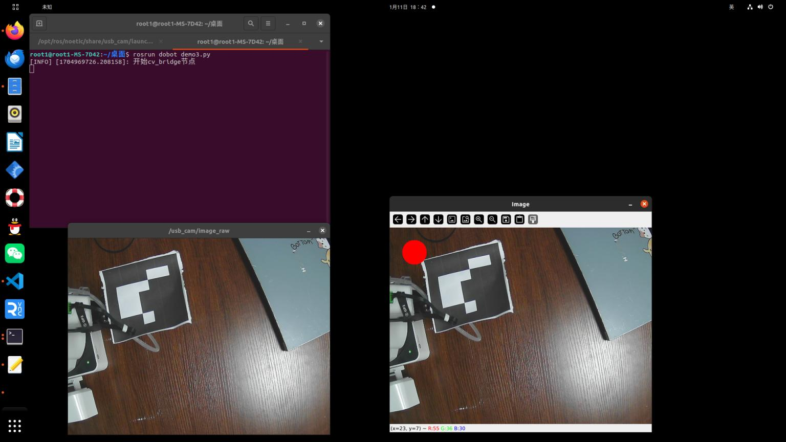

摄像头usb 使用cv_bridge 简单的显示一个红色的圆
#!/usr/bin/env python3
# -*- coding:utf-8 -*-
import rospy
from cv_bridge import CvBridge, CvBridgeError
from sensor_msgs.msg import Image
import cv2
class Demo3:
def __init__(self):
# 创建cv_bridge, 声明图像的发布者和订阅者
self.image_pub = rospy.Publisher("cv_image", Image, queue_size=1)
self.bridge = CvBridge()
self.image_sub = rospy.Subscriber("/usb_cam/image_raw", Image, self.callback)
def callback(self, data):
# 使用cv_bridge将ROS的图像数据转换为Opencv的图像格式
try:
cv_image = self.bridge.imgmsg_to_cv2(data, 'bgr8')
except CvBridgeError as e:
print(e)
# 在opencv的显示窗口中绘制一个圆，作为标记
(rows, cols, channels) = cv_image.shape
if cols > 60 and rows > 60:
cv2.circle(cv_image, (60, 60), 30, (0, 0, 255), -1)
# 显示Opencv格式的图像
cv2.imshow("Image", cv_image)
cv2.waitKey(3)
# 再将opencv格式数据转换成ros image格式的数据发布
try:
self.image_pub.publish(self.bridge.cv2_to_imgmsg(cv_image, 'bgr8'))
except CvBridgeError as e:
print(e)
if __name__ == '__main__':
try:
# 初始化ros节点
rospy.init_node("cv_bridge_test")
rospy.loginfo("开始cv_bridge节点")
Demo3()
rospy.spin()
except KeyboardInterrupt:
print("关闭节点")
